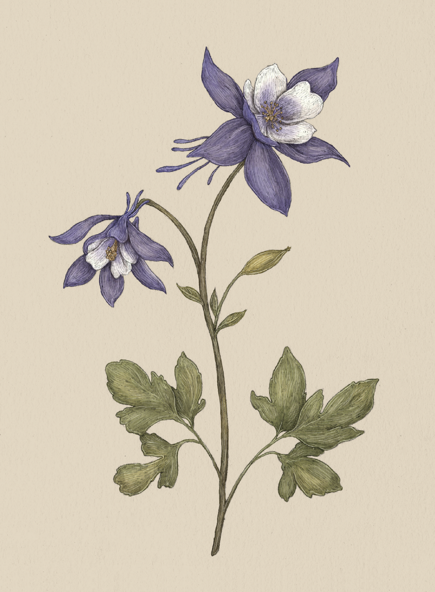

The Language of Flowers
Columbine

Columbine
Aquilegia
Meaning
Foolishness
Origin
Columbina was the name of a recurring character in the commedia dell'arte of early modern
Italy. A mistress of the jester or "fool," Harlequin, Columbina was known for her loud and gossipy
nature. The columbine's association with foolishness may stem from Columbina's love of the fool, or
her own readiness to make a fool of herself and others. The unusually shaped bloom of the columbine
also resembles a court jester's hat.
Pair With
- Asphodel to ask for forgiveness for an imprudent mistake
- Protea to show you're working to make a big change and correct past mistakes